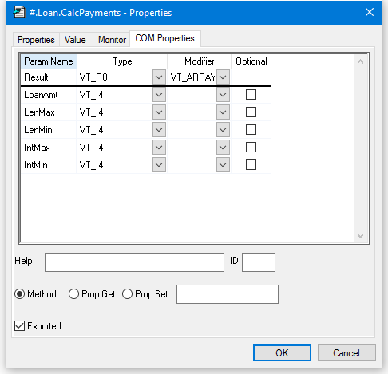
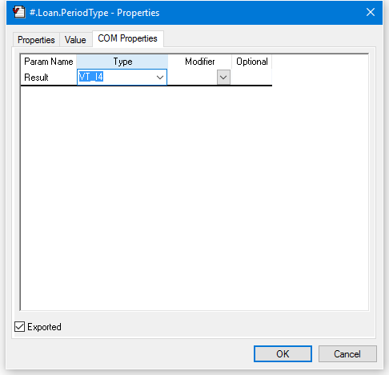
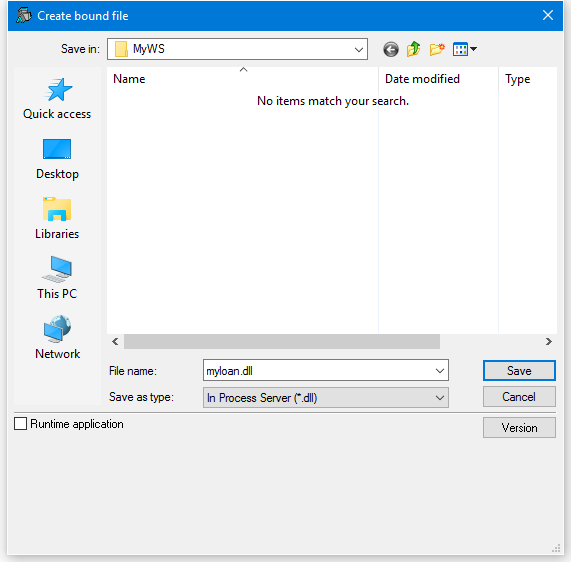
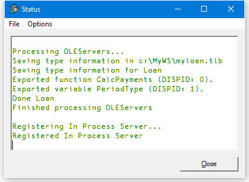
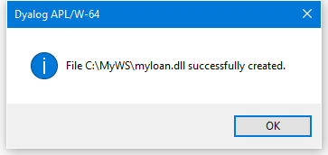
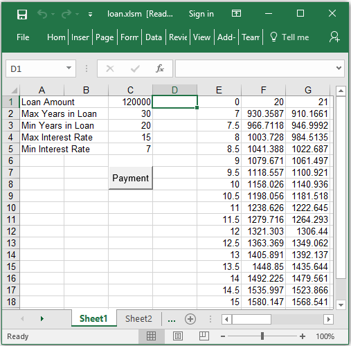

The LOAN Workspace
LOAN.DWS contains a single namespace called Loan which is used to calculate monthly repayments on a loan. As supplied, LOAN is a pure APL workspace. You will have to turn it into an OLE Server, and declare a method and a property, before you can use it.
The Loan namespace contains a single function CalcPayments and a variable PeriodType.
The CalcPayments function takes a 5-element numeric vector as an argument whose elements specify:
- loan amount
- maximum number of periods for repayment
- minimum number of periods for repayment
- maximum annual interest rate
- minimum annual interest rate
CalcPayments also uses the "global" variable PeriodType which specifies whether the periods (above) are years or months. This is done solely to illustrate how another application can manipulate an APL object via its variables (properties) as well as by calling its functions (methods).
CalcPayments returns a matrix. The first row contains the period numbers (from min to max). The first column contains the interest rates (from min to max in steps of 0.5%). Other elements contain the monthly repayments for the corresponding number of periods and interest rates.
Using CalcPayments
The following session transcript illustrates how the CalcPayments function is used.
)LOAD LOAN
C:\...\samples\ole\loan.dws saved ...
)OBS
Loan
)CS Loan
#.Loan
)FNS
CalcPayments
)VARS
PeriodType
CalcPayments 10000 5 3 6 3
0 3 4 5
3 290.8120963 221.3432699 179.6869066
3.5 293.0207973 223.5600105 181.9174497
4 295.2398501 225.7905464 184.1652206
4.5 297.4692448 228.0348608 186.4301924
5 299.708971 230.2929357 188.7123364
5.5 301.959018 232.5647523 191.0116217
6 304.2193745 234.8502905 193.3280153The CalcPayments Function
∇ PAYMENTS←CalcPayments X;LoanAmt;LenMax;LenMin;IntrMax;
IntrMin;PERIODS;INTEREST;NI;NM;PER;INT
[1] ⍝ Calculates loan repayments
[2] ⍝ Argument X specifies:
[3] ⍝ LoanAmt Loan amount
[4] ⍝ LenMax Maximum loan period
[5] ⍝ LenMin Minimum loan period
[6] ⍝ IntrMax Maximum interest rate
[7] ⍝ IntrMin Minimum interest rate
[8] ⍝ Also uses the following global variable (for illustration)
[9] ⍝ PeriodType Type of period;1 = years, 2 = months
[10]
[11] LoanAmt LenMax LenMin IntrMax IntrMin←X
[12]
[13] PER←PERIODS←¯1+LenMin+⍳1+LenMax-LenMin
[14] PERIODS←PERIODS×12 1[PeriodType]
[15] INT←INTEREST←0.5ׯ1+(2×IntrMin)+⍳1+2×IntrMax-IntrMin
[16] INTEREST←INTEREST÷100×12 1[PeriodType]
[17]
[18] NI←⍴INTEREST
[19] NM←⍴PERIODS
[20]
[21] PAYMENTS←(LoanAmt)×((NI,NM)⍴NM/INTEREST)÷1-1÷(1+INTEREST)∘.*PERIODS
[22] PAYMENTS←PER,[1]PAYMENTS
[23] PAYMENTS←(0,INT),PAYMENTS
∇Registering Loan as an OLE Server
To use this example, you must first
- Convert the
Loannamespace into an OLEServer object. - Declare the COM properties for
CalcPaymentsandPeriodType. - Create an in-process or out-of-process server and register the Loan object on your system.
Please perform the following steps:
On Windows 7 or later, you must start Dyalog APL with Administrator privileges (right-click the desktop icon and choose Run as administrator). This is necessary to register an OLE server.
)LOAD the loan workspace from the samples\ole sub-directory
)LOAD samples\ole\loan
samples\ole\loan saved ...
)OBS
LoanExecute the following statement to make Loan an OLEServer object:
Loan.⎕WC 'OLEServer'Next, change space into the Loan namespace and use ⎕NL to display the names of the two objects therein:
)CS Loan
#.Loan
⎕NL 2 3
CalcPayments
PeriodType Right-click over the name CalcPayments and select Properties from the pop-up menu. This brings up the Properties dialog box for Loan.CalcPayments. Click on the COM Properties tab, check the Exported box and then fill in the names and data types of its parameters as illustrated below.

The picture above shows the COM properties that are required to export function CalcPayments as a method. The function is declared to require 5 parameters of type VT_I4 (integers) and return a result of type VT_ARRAY of VT_R8 (an array of floating-point numbers).
The names you choose for the parameters will be visible in an object browser and certain other programming environments.
Do the same for the PeriodType variable so that it is exported as a property.

The picture above shows the COM properties to export variable PeriodType as a property. The property is declared to be of type VT_I4 (integer).
Rename and save the workspace to avoid overwriting the original:
)WSID c:\MyWS\myloan
was C:\Program Files\Dyalog\Dyalog APL-64 15.0 Unicode\Samples\ole\loan.dws
)SAVE
c:\MyWS\myloan.dws saved...Finally, to create your OLE Server, choose Export from the Session File menu and complete the Create bound file dialog box as shown below. In this case, the OLE Server is created as an in-process server, bound to the development version of the Dyalog APL DLL (because the Runtime application checkbox is cleared)



Using Loan from Excel
Start Excel and load the spreadsheet Loan.xlsm from the Dyalog APL sub-directory samples\ole.
The Payments button fires a simple macro that uses the APL dyalog.Loan object to perform repayment calculations. To run the example enter data into the cells as shown below, then click Payments. When you do so, Excel runs the Calc macro and this causes OLE to initialise the dyalog.Loan OLE Server
The Calc macro actually calculates the repayments matrix by calling the CalcPayments method in the dyalog.Loan object; that is, it runs the CalcPayments function in the Loan namespace.

How it Works
Sub Calc()
Dim APLLoan As Object
Dim Payments As Variant
Set APLLoan = CreateObject("dyalog.Loan")
LoanAmt = Cells(1, 3).Value
LenMax = Cells(2, 3).Value
LenMin = Cells(3, 3).Value
IntrMax = Cells(4, 3).Value
IntrMin = Cells(5, 3).Value
APLLoan.PeriodType = 1
Payments = APLLoan.CalcPayments(LoanAmt, LenMax,
LenMin, IntrMax, IntrMin)
For r = 0 To UBound(Payments, 1)
For c = 0 To UBound(Payments, 2)
Cells(r + 1, c + 5).Value = Payments(r, c)
Next c
Next r
End SubThe statement:
Dim APLLoan As Objectdeclares a (local) variable called APLLoan to be of type Object
The next statement:
Set APLLoan = CreateObject("dyalog.Loan")creates an instance of dyalog.Loan associated with this variable.
Effectively, when the macro is run, Excel asks OLE to provide the external object called dyalog.Loan.
If you exported Loan as an out-of-process OLE Server, OLE starts the appropriate version (development or run-time) of Dyalog APL with your workspace MYLOAN. If you exported Loan as an in-process OLE Server, OLE loads MYLOAN.DLL into your Visual Basic application which in turn loads the appropriate Dyalog APL DLL. In either case, an instance of the Loan namespace is connected to the Excel macro as an Object.
The next statement to notice is:
APLLoan.PeriodType = 1In Excel terms, this statement sets the PeriodType property of the APLLoan object to the value 1. What actually happens, is that the APL variable PeriodType in the corresponding running instance of the Loan namespace is set to 1.
Finally, the following statement:
Payments = APLLoan.CalcPayments(LoanAmt, LenMax, LenMin,
IntrMax, IntrMin)calls the APL function CalcPayments and receives the result.
In Excel terms, this statement invokes the CalcPayments method of the APLLoan object. In practice, it calls the CalcPayments APL function with the specified argument and puts the result in the local variable Payments. The conversion between the result of the function (a Dyalog APL floating-point matrix) and the corresponding Excel data type is performed automatically for you.
The APLLoan variable is local to the Calc macro. This means that the dyalog.Loan object is loaded every time that Calc is run and is unloaded when it terminates.
Using Loan from Dyalog APL
It is of course possible to use Dyalog APL as both an OLE Automation client and an OLE Automation Server.
To use the dyalog.Loan object, start Dyalog APL and then enter the following expressions in the Session window.
'LN'⎕WC'OLEClient' 'dyalog.Loan'
)OBS
LN
)CS LN
#.LN
)METHODS
CalcPayments
)PROPS
AutoBrowse ChildList ClassID ClassName Data Event EventList Handle HelpFile
InstanceMode KeepOnClose LastError LateBind Locale MethodList PeriodType PropList
QueueEvents Type TypeList
CalcPayments 10000 5 3 6 3
0 3 4 5
3 290.8120963 221.3432699 179.6869066
3.5 293.0207973 223.5600105 181.9174497
4 295.2398501 225.7905464 184.1652206
4.5 297.4692448 228.0348608 186.4301924
5 299.708971 230.2929357 188.7123364
5.5 301.959018 232.5647523 191.0116217
6 304.2193745 234.8502905 193.3280153The statement:
'LN'⎕WC'OLEClient' 'dyalog.Loan'causes APL to ask OLE to provide the external object called dyalog.Loan. This name will have been recorded in the registry by Dyalog APL when you saved the MYLOAN workspace.
If you exported Loan as an out-of-process OLE Server, OLE starts a second Dyalog APL process (development or run-time) with your workspace MYLOAN. There are now two separate copies of Dyalog APL running; one is the client, the other the server.
If you exported Loan as an in-process OLE Server, OLE loads MYLOAN.DLL into the Dyalog APL program which in turn loads the appropriate Dyalog APL DLL. These DLLs are both are loaded into the same address space as the original APL process. In effect, you have two copies of APL (and two workspaces) running as a single program.
In both cases, the mapping between the corresponding functions and variables is direct. Effectively, the client namespace LN is an instance of the server namespace Loan.